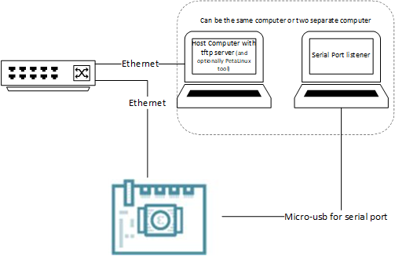

QSPI to PXE/tftp boot¶
Introduction¶
The prioritized boot order for U-Boot is specified in BootFW U-Boot page. The last device in the prioritized list is Ethernet using DHCP/PXE. There is existing PXE support in u-boot to support Ethernet booting. This document provides instructions for tftp booting on Starter Kits using Ethernet/DHCP/PXE. Instructions are provided for booting both PetaLinux and Ubuntu via PXE. Their tftp server setup differs, but on-target steps are the same.
This example uses K26 on KR260 as an example, but same steps can be taken for other starter kits as well as K24 - as long as names of the SOM or Starter Kits are replaced appropriately.
Setup Requirements¶
This document assumes that you have had experience booting Linux on Starter Kit via other boot methods (SD by default), familiar with how to interact with the Starter Kit via serial port, and have updated the bootfw on the Starter Kit. If not, please go through booting Linux on KV260 or booting Linux on KR260 before following the steps in this document.
If booting using Yocto, this assumes that you are familiar with generating artifacts with instructions from Kria Yocto support.
If booting PetaLinux, this also assumes that you are familiar with PetaLinux and have installed the appropriate version of PetaLinux on the Linux host computer. Refer to UG1144 for more information on PetaLinux and download page for installation files. Ubuntu booting do not need PetaLinux tools.
In this example, we will use a host computer with a tftp server to host files required to boot Linux on Starter Kits. Connect the Starter Kit’s PS Ethernet port to local network. Connect a host computer to the same local network. If booting PetaLinux, this host computer needs to be a Linux host running PetaLinux toolchain. If booting Ubuntu, this host computer can be Windows or Linux. Lastly, connect the Starter Kit’s micro-USB port to a computer (can be the same host computer or a different one) to interact with u-boot through serial port.

Linux Host Computer Setup¶
Depending on if booting with Yocto, PetaLinux or Ubuntu - choose one of the sections below to follow:
Linux Host Computer Setup for Yocto¶
On the Linux host computer, follow instructions in Kria Yocto support, and generate bitbake recipe kria-image-full-cmdline for the target machine. That will create a pxeboot config file in $yocto_workspace/build/tmp/deploy/images/<machine name>/pxelinux.cfg/default file with the following content:
LABEL Linux
KERNEL Image
FDT system.dtb
INITRD petalinux-initramfs-image-<machinename>.cpio.gz.u-boot
pxelinux.cfg/default refers to files that can be found in $yocto_workspace/build/tmp/deploy/images/. Note that it is using the initramfs generated - which is a smaller file system that allows Linux to boot to a place where it can look for existing rootfs in other locations such as eMMC, SD card. If you want to boot to log in prompt purely through pxeboot, replace petalinux-initramfs-image-<machinename>.cpio.gz.u-boot with kria-image-full-cmdline-<machinename>.cpio.gz.u-boot.
When using MACHINE = k26-smk or k24-smk, system.dtb by default is pointing to a shared dtb for the SOM that does not have information about the carrier card. Keeping the dtb as is will boot, but it will not have any CC peripheral support such as ethernet. The dtb files with CC peripheral support can be found in devicetree/SMK-zynqmp-sck-<CC_board>.dtb. Pick the device tree for your target starter kit, and update the FDT in /tftpboot/pxelinux.cfg/default to point to that dtb file. If using MACHINE = k26-smk-kv, k26-smk-kr, or k24-smk-kd, system.dtb will point to the device tree blob that have CC peripheral support that you will not need to change it.
Now set up a TFTP server on the Linux host computer. Make sure to point to $yocto_workspace/build/tmp/deploy/images/<machine name>/ as the TFTP folder and start the server. Note the IP address of the Linux host computer, we will refer to it as <host ip>.
Linux Host Computer Setup for PetaLinux¶
On the Linux host computer, download a PetaLinux BSP for the target Stater Kit, create project, and configure it for TFTP:
petalinux-create -t project -s xilinx-<board>-<version>-<timestamp>.bsp
cd xilinx-<board>-<version>
petalinux-config
# in petalinux-config window, do:
# Image Packaging Configuration > Root File System Type > change to NFS
# exit out of config and let it configure
By default, PetaLinux uses /tftpboot folder for nfs/tftp. Create the folder and change permission before building:
sudo mkdir /tftpboot
sudo chmod 766 /tftpboot
petalinux-build
This will create a /tftpboot/pxelinux.cfg/default file with the following content:
LABEL Linux
KERNEL Image
FDT system.dtb
INITRD ramdisk.cpio.gz.u-boot
/tftpboot/pxelinux.cfg/default refers to files that can be found in /tftpboot.
Note that it is using the ramdisk generated - which is a smaller initram that allows Linux to boot to a place where it can look for existing rootfs in other locations such as eMMC, SD card. If you want to boot to log in prompt purely through pxeboot, replace ramdisk.cpio.gz.u-boot with rootfs.cpio.gz.u-boot.
Now set up a TFTP server on the Linux host computer. Make sure to point to /tftpboot/ as the TFTP folder and start the server. Note the IP address of the Linux host computer, we will refer to it as <host ip>.
Host Computer Setup for Ubuntu¶
Since Ubuntu do not require PetaLinux tool chain, either a Linux host or a windows host computer can be used for Ubuntu PXE booting. The released Ubuntu image packages the kernel image, initrd, and many device tree blobs into a flat image.fit. PXE booting does not use boot script to automatically select the device tree required for the board. Therefore, we need to regenerate an image.fit file that selects the right configuration for the target Starter Kit. This is done on target with the following steps.
Program an Ubuntu image into a SD card and boot. After booting, note the following files on target:
sudo -s
ls -l /boot/firmware/image.fit
ls -l /boot/firmware/boot.scr.uimg
ls -l /boot/initrd.img
ls -l /usr/share/flash-kernel/its/image-kria.its
Open the .its file, which is the recipe to build the flat image.fit file:
vi /usr/share/flash-kernel/its/image-kria.its
There are pointers to kernel, initrd, and device trees. To update the default device tree PXE booting picks, this line needs to be updated default = "conf-zynqmp-smk-k26-revA"; to the configuration appropriate for the target Starter Kit. To figure out which configuration is appropriate for the target Starter Kit, find the Starter Kit type and revision and look at which configuration that revision uses in /boot/firmware/boot.scr.uimg.
The type and revision of the starter kit is printed out by U-boot upon booting. For an example, this is the print-out for a KR260 board, rev1 Starter Kit SOM and rev1 carrier card:
U-Boot 2023.01 (Mar 29 2023 - 13:08:40 +0000)
CPU: ZynqMP
Silicon: v3
Chip: xck26
Detected name: zynqmp-smk-k26-xcl2g-rev1-sck-kr-g-rev1
Model: ZynqMP KR260 revB
Board: Xilinx ZynqMP
DRAM: 2 GiB (effective 4 GiB)
PMUFW: v1.1
Xilinx I2C FRU format at nvmem0:
Manufacturer Name: XILINX
Product Name: SMK-K26-XCL2G
Serial No: XFL1WXS12XXF
Part Number: 5057-04
File ID: 0x0
Revision Number: 1
Xilinx I2C FRU format at nvmem1:
Manufacturer Name: XILINX
Product Name: SCK-KR-G
Serial No: XFL1ETNCCIJ4
Part Number: 5100-01
File ID: 0x0
Revision Number: 1
EL Level: EL2
Secure Boot: not authenticated, not encrypted
Core: 136 devices, 34 uclasses, devicetree: fit
NAND: 0 MiB
MMC:
Loading Environment from nowhere... OK
In: serial
Out: serial
Err: serial
Bootmode: QSPI_MODE
Note that in /usr/share/flash-kernel/its/image-kria.its, rev 1 doesn’t have its own specific configuration. To find the configuration that rev 1 KR260 uses, look at /boot/firmware/boot.scr.uimg file on target and observe the following:
elif test "${card1_name}" = "SCK-KR-G"; then
if test "${card1_rev}" = "B" || test "${card1_rev}" = "1"; then
# revB dtb also supports rev1 dtb
boot_conf=#conf-smk-k26-revA-sck-kr-g-revB
This means the boot_conf conf-smk-k26-revA-sck-kr-g-revB supports rev1 KR260. Therefore, update /usr/share/flash-kernel/its/image-kria.its
from:
default = "conf-zynqmp-smk-k26-revA";
to:
default = "conf-smk-k26-revA-sck-kr-g-revB";
Save and regenerate the image.fit with the right configuration using flash-kernel command:
flash-kernel
ls -l /boot/firmware/image.fit # note new timestamp
reboot #reboot to force write to SD card and test new kernel
Unplug the SD card from target and view the SD card content on the host computer. There is an image.fit file on the SD card’s boot partition. Copy that file into a <ubuntu_tftp>/ folder on the host computer. In the same folder, create <ubuntu_tftp>/pxelinux.cfg/default file and populate the file with this content:
LABEL Linux_ubuntu
KERNEL image.fit
Now set up a TFTP server on the host computer. Make sure to point to <ubuntu_tftp>/ as the TFTP folder and start the server. Note the IP address of the Linux host computer, we will refer to it as <host ip>.
Setting up TFTP on the Server¶
Each host computer may have different steps to setup TFTP servers.
With a Windows host, this guide have been tested with using SolarWinds’ TFTP server. Please note that Windows’ firewall settings may need to be adjusted to allow TFTP servers.
With a Ubuntu host, this guide was tested using tftpd-hpa package.
You are free to use other TFTP server programs that works.
Boot Starter Kit Using PXE¶
Make sure that the Starter Kit has the latest bootfw for the tool version in QSPI. Power on the Starter Kit, it will boot from the boot images in QSPI. Observe serial port output on the computer with serial port connection. Press “enter” at u-boot to enter u-boot command line. On u-boot command line, set serverip variable to that of tftp server:
setenv serverip <host ip>
Note that by default, saveenv is not enabled in u-boot. This means that serverip will need to be set up every re-boot.
The following step is optional. Verify connection to the server:
dhcp # setup Ethernet and ip address on target, this is done automatically during PXE booting
ping $serverip # confirm ethernet connection to host
Note that in the boot priority order (code here), PXE is the last priority. This means if there’s boot images in eMMC or SD or USB - they will be used to boot first. If there are no boot images on any of those devices, just a simple boot command would lead to PXE to be chosen and it will retrieve pxelinux.cfg/default from /tftpboot folder on host computer and start booting.
If there are other images in other devices thats more prioritized by u-boot, then direct U-Boot to choose PXE boot using the following commands:
run bootcmd_pxe
If using Yocto/PetaLinux and using the larger rootfs, the kernel and rootfs should load and boot to log-in prompt to PetaLinux, indicating a successful PXE boot! If using the initram, and a SD card with full rootfs is plugged into the SD slot - the above steps will boot using kernel image from tftp server and grab the full rootfs image from the SD card and boot to log-in prompt.
If using Ubuntu, image.fit contains a small initram - the Starter Kit will boot into BusyBox and have limited functionality.If a SD card with full rootfs is plugged into the SD slot - the above steps will boot using kernel image from tftp server and grab the full rootfs image from the SD card instead of BusyBox initrd.
License¶
Licensed under the Apache License, Version 2.0 (the “License”); you may not use this file except in compliance with the License.
You may obtain a copy of the License at http://www.apache.org/licenses/LICENSE-2.0
Unless required by applicable law or agreed to in writing, software distributed under the License is distributed on an “AS IS” BASIS, WITHOUT WARRANTIES OR CONDITIONS OF ANY KIND, either express or implied. See the License for the specific language governing permissions and limitations under the License.
Copyright© 2023 Advanced Micro Devices, Inc